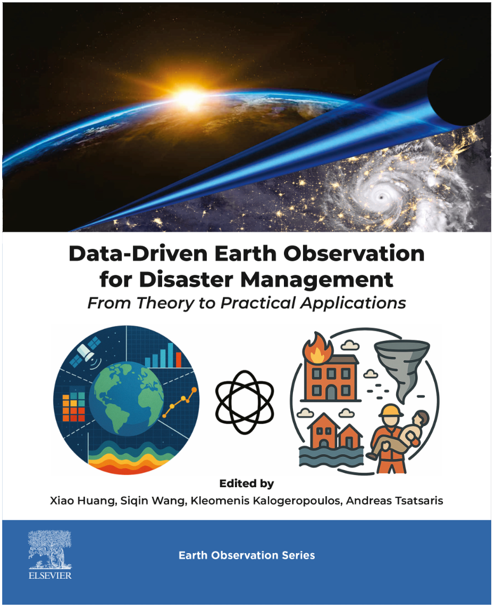
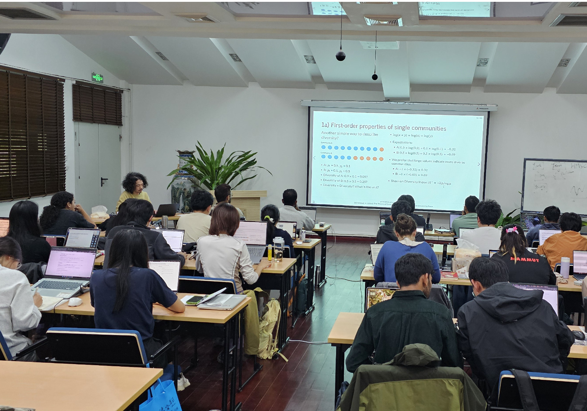
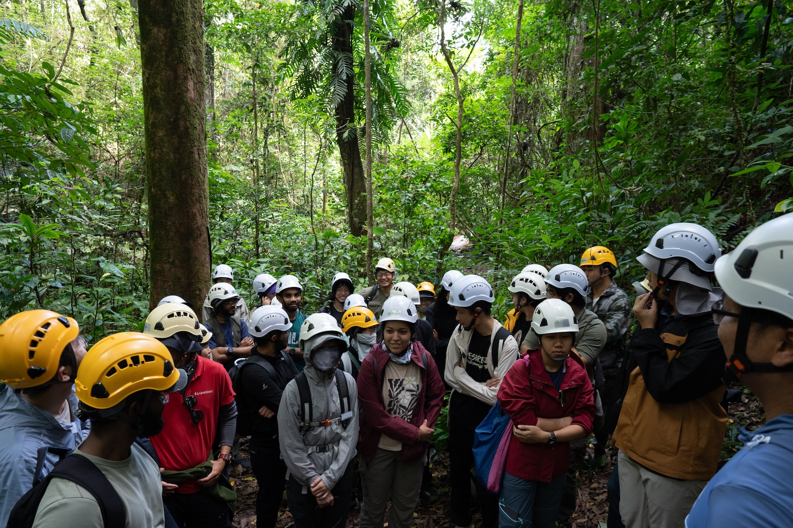
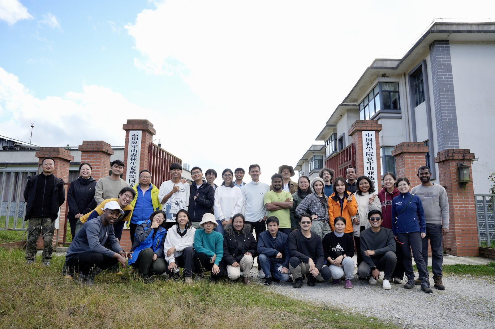
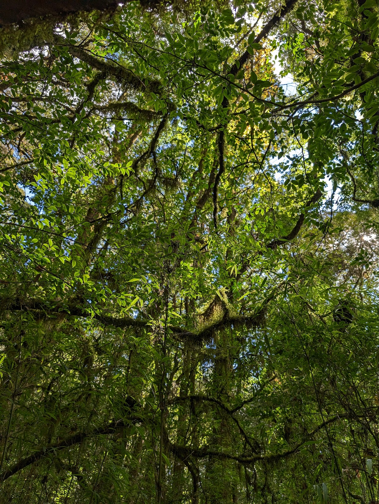

Masatoshi Katabuchi (片渕正紀)
I am an Associate Professor at Xishuangbanna Tropical Botanical Garden (XTBG), Chinese Academy of Sciences (CAS). My research focuses on using functional traits and statistical and simulation models to better understand forest diversity, including how they respond to climate change.
News
December 2025
- New book chapter, led by Di Yang, on deforestation assessment using Earth observation technologies is now online.

- New R package, for computing conspecific and total neighborhood basal area in mapped forest plots, is out. GitHub.
- New paper, led by Hiroko Kurokawa, examining leaf litter decomposition along elevation gradients across contrasting forest types is now online in Ecological Research.
November 2025
- Taught a session on community ecology in the AFEC-X course, followed by field-based training in the Xishuangbanna 20 ha plot.


July 2025
- New paper showing how hydraulic conductivity drives systematic parameter variation in thermal-dissipation sap-flow techniques is now online in New Phytologist.
June 2025
April 2025
- New paper on LMA components is now online in Oecologia
- New paper, led by graduate student Thi Duyen Nguyen, revealing how wood density shapes global tree architecture is now online in Journal of Forestry Research.
November 2024
- Taught a session on community ecology in the AFEC-X course, followed by field-based training in the Ailaoshan 20 ha plot.


May 2024
- New paper on how drought tolerance and species abundance mediate dry-season negative density dependence in a tropical forest is now online in Ecology.
November 2023
- New paper, led by graduate student Cong Zhou, showing how artificial light at night (ALAN) influences understory plant traits in a rubber plantation is now online in Ecologies.
July 2023
- New paper, led by graduate student Kittisack Phoutthavong, on
fern leaf-trait adaptations across limestone and non-limestone forests is now online in Journal of Plant Ecology.